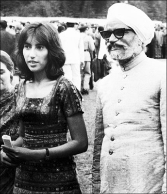
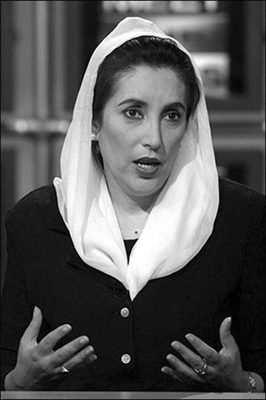
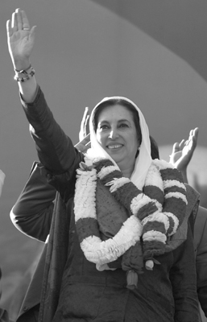

“Yöneticiler seçimlere girmeme ister izin versin isterse de vermesin. Ne pahasına olursa olsun, ülkeme döneceğim. Başbakan olmak istediğim için değil, halkıma verdiğim sözü yerine getirmek için...”
Benazir Butto (Sürgünden dönüp,
suikasta kurban gitmesinden kısa bir süre önce)
21 Haziran 1953, Pakistanlı zengin ve soylu bir aileden gelen Zülfikar Ali Butto ile İranlı bir işadamının kızı olan Begüm Nusret’in ilk çocuklarının dünyaya geldiği tarihti. Doğan çocuğa ‘eşsiz’ anlamına gelen Benazir adı koyuldu. Gözlerin sürekli üzerinde olduğu, zor bir yaşamı olacaktı Benazir’in. İniş çıkışlarla bezeli; ölümler, hapisler ve sürgünlerle şekillenmiş bir hayat. Henüz çok yakın bir tarihte, 1947 yılında bağımsızlığına kavuşmuş ülkesinde, 35 yaşında Başbakanlık koltuğuna oturacak bir kadındı o. Güney Asya topraklarında, Müslüman bir ülkede, genç bir kadının en üst kademedeki yönetici olmasının ne kadar zor olduğunu biliyordu; aldığı sorumluluktan haberdardı. Pakistan’ı daha ileriye götürmek, daha demokratik bir ülke yapmak hayaliyle, iki kez indirildiği Başbakanlık koltuğuna yeniden oturma yolunda ilerliyordu. Ne çektiği acılar, ne darbeler, ne sürgünler onu yolundan döndürebildi. Ta ki, bir suikasta kurban gittiği 2007 yılı Aralık ayına kadar.
Benazir Butto’nun siyaset macerası, aslında babasının yıllar önce başlayan öyküsünün bir sonucuydu. Peki, onun daha sonraki hayatında belirleyici olacak, Pakistan’ın nüfuzlu ve varlıklı ailelerinden birine mensup olan Zülfikar Ali Butto kimdi? Benazir Butto’nun dedesi Sir Şah Nevaz Butto bir toprak ağasıydı. Oğlu Zülfikar Ali’nin iyi bir eğitim almasını ve siyasette söz sahibi olmasını istiyordu. Bu yüzden Ali’yi ilk önce İngilizlerin Hindistan’da kurdukları Cathedral ve John Connon okullarına gönderdi. Daha sonra ABD’nin saygın üniversitelerinden Berkeley’e devam eden Ali, gençliğini sürdürürken bağımsızlık hareketleri başlamış, Muhammed Ali Cinnah bağımsız Pakistan’ın temellerini atmıştı. Ali bu süreçte, babasının kendisine çizdiği rolden de ilham alarak siyasete girmeye karar verecekti.
Baba Butto siyaset sahnesinde
Ülkesinin içinde bulunduğu duruma kafa yoran ve bağımsızlık hareketlerinden etkilenen Zülfikar Ali Butto, Berkeley’de okuduğu yıllarda sosyalizme merak salmıştı. Bir taraftan okuyor, araştırıyor, öğreniyor; bir taraftan da kendi düşüncelerini aktarmak üzere konferanslar veriyordu. Daha sonra kuracağı Pakistan Halk Partisi’nin temellerini de Berkeley’deki öğrencilik yıllarında böylece atmış oluyordu. Berkeley’de siyaset bilimi eğitimi alan Butto, ardından İngiltere’ye geçerek Oxford’da uluslararası hukuk okudu. Okulunu dereceyle bitiren ve Londra’da avukatlık yapmaya başlayan Butto’nun hayatında tam da bu dönemde önemli bir değişiklik oldu: Henüz çocuk yaştayken evlendirildiği ilk eşinden sonra ikinci bir kadına âşık olmuş ve onunla evlenmeye karar vermişti.
Begüm Nusret, Karaçi’de yaşayan zengin bir İranlı işadamının kızıydı. Bu evlilikten önce Benazir, onun ardından ilk oğulları Murtaza, ikinci kızları Sanem ve ikinci erkek çocukları Şah Nevaz dünyaya geldi. Bir süre sonra babasının hayatını kaybetmesi, Londra’da avukatlık yapan Zülfikar Ali Butto’nun ülkesine dönerek, ailenin malvarlığının başına geçmesine yol açtı. O tarihten itibaren Pakistan siyasetinde Butto ismi eksik olmayacaktı.
Butto, siyasete ilk adımını 1957’de Pakistan adına BM heyetine tayin edilmesiyle attı. Bir yıl sonra, Pakistan’da yönetime el koyan Eyüp Han, Butto’yu Enerji Bakanlığı’na getirecekti. Henüz 30 yaşındayken Pakistan’ın en genç bakanı olarak tarihteki yerini alıyordu Butto. Bu süreçte, Hindistan ve Sovyetler Birliği ile çeşitli anlaşmalar imzalayan genç bakan, 5 yıl sonra Dışişleri Bakanlığı koltuğuna oturacaktı.
Ancak, bu istikrarlı tablo uzun sürmedi. 1965’te Hindistan’la yaşanan Keşmir anlaşmazlığı yüzünden Butto ile Eyüp Han’ın yolları ayrıldı. İşte Butto için başlangıç, belki de sonun başlangıcı buradaydı. Eyüp Han, muhalefet hareketini başlatan ve köy köy dolaşarak konferanslar veren Butto için tutuklama kararı çıkarmıştı. Kapısına dayanan askerler, Kasım 1968’de Butto’yu evinden alarak götürdüler. Butto’nun üç aylık tutukluluk süresi sokaklardaki tepkileri büyütmüş, istikrarsızlığı daha da arttırmıştı. Eyüp Han, mecburen Butto’yu serbest bırakmak zorunda kalacaktı. Butto’nun tekrar partisinin başına geçmesi ve muhalefet hareketlerini örgütlemesiyle, sokağın sesine dayanamayan Eyüp Han hükümeti istifa etti.
7 Aralık 1970’te Pakistan’da yapılan seçimlerden zaferle çıkan Butto, Doğu Pakistan’ın bağımsızlığını isteyen Avami Partisi lideri Mucibür’r Rahman’la anlaşarak bir koalisyon hükümeti kuramadı. Bu iki liderin bir türlü uzlaşma sağlayamaması üzerine 1 Mart 1971’de ortam iyice gerildi. Halk sokaklara dökülmüştü; Doğu Pakistan kaynıyordu. Ordunun müdahalesi de eklenince, Hindistan’a dönük göçün, daha doğrusu sığınma taleplerinin önü alınamaz hale geldi.
Bu arada Hindistan-Pakistan Savaşı da patlak vermişti. Aralık ayında Hindistan, Doğu Pakistan’ın büyük bir bölümünü işgal etti. 22 Aralık 1971’de Hindistan geri çekilirken, yerini Doğu Pakistan’ın bağımsız devleti Bangladeş Müslüman Halk Cumhuriyeti alıyordu. O yıl Pakistan Devlet Başkanlığı’na gelen Butto, 1973 yılından sonra ise Başbakan olarak görevine devam edecekti. Ancak aradan henüz 4 yıl geçmişti ki, yönetime el koyan General Ziya-ül Hakk, Butto’yu tutuklatarak cezaevine gönderdi. Butto, muhaliflerini çeşitli yollarla öldürtmekle suçlanıyordu. Bu sebeple başlayan yargılamalar bir yıl sürdü ve karar açıklandı: İdam.
4 Nisan 1979 tarihinde Rawalpinhi şehrinde gerçekleştirilen infaz ile Zülfikar Ali Butto hayata gözlerini yumdu.
Müslüman ama Marksist lider bir baba
Bangladeş’in ülkesinden kopuşundan sonra Zülfikar Ali Butto, önce Başbakanlık, sonra da Cumhurbaşkanlığı koltuğuna oturdu. Genç ve idealist bir lider olmakla birlikte ülkesinin geleceğini çok fazla değiştiremedi. Askeri yönetimler, yoksulluk, iç kargaşa yıllarca hüküm sürüp gitti. Butto, demokratik bir yönetim, sosyalist ekonomi ve halkın iktidarını öngörüyordu. Bu vaatlerle siyasi hayatına başlamış ve basamakları hızla tırmanmıştı. Çok zengin bir aileden gelen Butto, hem Müslüman hem de Marksist olduğunu söylüyordu. Kendisiyle röportaj yapan İtalyan gazeteci Orianna Fallaci’ye şöyle açıklıyordu düşüncelerini: “Ben ekonomik açıdan bir Marksistim. Ama sadece ekonomiyle kendimi sınırlarım. Marksizm’in tarihi diyalektikle yorumlamasına, yaşama ilişkin kurallarına ve Tanrı’nın varlığını tartışmasına karşıyım. İyi bir Müslüman olarak ben Tanrı’ya inanırım. Yanlış ya da doğru, inanırım. İnanç öyle bir şeydir ki ya vardır ya da yoktur. Varsa bunu tartışmak yararsızdır. Ben inancı içimde taşırım. Marksizm’in dinsel ve felsefi yönleri adına bu inancımdan caymak niyetinde değilim. Bununla birlikte Pakistan gibi geri kalmış bir ülke için sosyalizmden başka bir çözüm görmüyorum.”
Bu sözler, Butto’nun neden Marksist olduğunu açıklıyordu, ancak muhalifleri onu yeterince inandırıcı bulmuyorlardı. Butto ise samimiyetini ispatlamak için, yaptığı toprak reformu ile ailesinin 45 bin dönümlük toprağını yitirdiğini örnek gösteriyordu. Butto sadece Marksist olmakla eleştirilmiyor, bunun yanında diktatörlük ve faşistlikle de suçlanıyordu.
Sürgünden Başbakanlığa uzanan yol
Zülfikar Ali Butto’nun siyasi hayatının sonu olan tarih, kızı Benazir Butto için siyasete ilk adımdı. Harvard ve Oxford’da eğitim alan Benazir, Pakistan’a döndüğünde, hem siyasi kariyeri, hem de tüm aile açısından acı ve üzüntüyü beraberinde getirecek olaylar zinciri başlıyordu. Darbe sonrasında tutuklanan babasının iki yıl sonra gerçekleştirilen idamı tüm aileyi yıkmıştı. Benazir önce annesiyle birlikte yedi ay boyunca Sihala’da ev hapsinde kaldı. Daha sonra Karaçi’deki evlerine gitme izni çıktı. Benazir annesiyle birlikte memleketi Karaçi’de 5 yıllık sürgün hayatını ve ev hapsini geçirirken erkek kardeşleri Murtaza ve Şah Nevaz, Kabil’e ve Şam’a gönderilmişti.

Benazir Butto gençlik yıllarında sıkı bir eğitim gördü.
Benazir, Karaçi’deki sürgün hayatını tamamladıktan sonra Londra’ya geçti ve babasının kurduğu Pakistan Halk Partisi’nin lideri oldu. Dram, onu burada da gölge gibi izleyecekti. Babasının ölümünden 7 yıl sonra kardeşi Şah Nevaz’ı Fransa’nın Cannes şehrinde kaybetti. Şah Nevaz’ın Afgan eşi tarafından mı zehirlendiği, yoksa bir suikasta mı kurban gittiği bir türlü öğrenilemedi. Sebebi meçhul bir ölümle henüz 27 yaşındayken dünyadan göç eden Şah Nevaz, Butto ailesinin ikinci kaybıydı. Bu acıyı da sineye çeken Benazir, kardeşinin ölümünden bir yıl sonra Pakistan’a döndü.
Elini arı sokunca evliliğe ikna oldu
Önce babasının kaybı, arkasından Karaçi ve Londra’da yaşadığı sürgün hayatı Butto’nun hayata bakışını derinden etkilemişti. Henüz yaşı çok gençti ve evlenmesi yönünde öneriler alıyordu. Hatta bu öneriler bir süre sonra baskıya dönüşmeye bile başlamıştı. İşte tam bu sırada karşısına Pakistan’da geniş toprakları olan ve ticaretle uğraşan Asif Zardari çıktı. Daha doğrusu, artık 32 yaşına gelen kızını evlendirmek isteyen annesi Nusret ile teyzesi Mana, birlik olup, Asif Zardari’yi istemişlerdi! Londra Ekonomik ve Siyasi Bilimler Merkezi’nde eğitim alan Zardari, inşaat ve emlak işiyle uğraşıyordu.
Benazir Butto’nun siyasi bir ideali ve bu ideali gerçekleştirmeye yönelik bir hayatı vardı. Evlilik konusu kafasını karıştırıyordu. Öte yandan Doğulu bir toplumda ‘evlenmemiş bir kadın’ olarak liderliğe nasıl soyunabileceğini de düşünüyordu. Gazetecilerin “Neden evlenmiyorsunuz?” sorusu da canını sıkmaya başlamıştı. Ailenin ısrarlarıyla Asif Zardari’yle görüşmeyi kabul etti.
İki genç, aile içinde birkaç kez bir araya geldiler. Yine de Benazir, ağırdan alıyordu. Teklifinin üzerinden iki yıl geçmesine rağmen cevap alamayan Asif Zardari ise dişli çıkmıştı, inatla bekliyordu. Sonunda müstakbel eşiyle birkaç görüşme daha yapan Butto’yu evlilik kararına iten ilginç bir gelişme olacaktı; arı sokması! Daha sonra anlattığına göre, parkta gezerken Butto’nun elini arı sokar ve yaralı parmak balon gibi şişer. Butto’nun elini gören Asif, “Hemen seni hastaneye götürüyorum” diyerek duruma el koyar. Hastaneye gidilir, muayene yapılır, ilaçlar alınır... İlk kez hiçbir çaba göstermeden kendisi adına bir şeylerin yapıldığını gören genç kadın, kendini iyi ve güvende hissetmiştir.
Arı hikâyesi, 17 Aralık 1987’de Karaçi’de gerçekleşen düğünle neticelenecektir. On binlerce kişinin katıldığı düğün, Butto ailesinin muhalifi ve babasını idam ettiren Ziya-ül Hakk’a karşı da bir gövde gösterisi olmuştur. Tören için babası Zülfikar Ali Butto’nun ilk defa büyük kitlelerin karşısına çıktığı spor salonu seçilmiştir. Başbakanlık koltuğuna oturmadan bir yıl önce gerçekleştirilen bu evlilik sonucunda Butto, üç çocuk sahibi olacaktır: Oğlu Bilavel, büyük kızı Bahtevar ve küçük kızı Asefa.
Kocasından ve muhaliflerinden çekti!
17 Ağustos 1988’de Pakistan Devlet Başkanı General Ziya-ül Hakk’ı taşıyan uçağın havada infilak etmesi, Pakistan için yeni bir sayfanın açıldığına işaret ediyordu. Butto, bu sayfaya adını yazdırmaya kararlıydı. 19 Kasım 1988’de yapılan seçimleri kazanan Benazir, yeni hükümeti kurmakla görevlendirilmişti. Butto, bu gelişmeyle beraber İslam dünyasının ilk kadın Başbakanı sıfatını da alıyordu. Lakin Benazir’in ilk Başbakanlık deneyimi uzun sürmeyecekti. Bu arada daha önce siyasi hayatın içinde yer almayan eşi Asif Zardari de kısa bir süre sonra parlamentoya girmişti. Ancak hükümetin kuruluşunun üzerinden 20 ay geçtikten sonra askerin desteğini arkasına alan Gulam İshak Han, yeniden seçimlere gitme iddiasıyla hükümeti devirdi. Buttoların payına bir kez daha ‘devrilmek’ düşmüştü.
Butto’nun görevden ayrılmasından sonra eşi Asif Zardari de şantaj ve yolsuzluk iddialarıyla tutuklandı. Bankacı Murtaza Bukhari’den rüşvet istediği, vermeyince ise evine bomba attırdığı suçlamalarıyla yargılanıyordu. Hakkındaki iddialar kanıtlanamasa da Asif Zardari üç yıl hapis yattı.

Butto ailesi bir döneme damga vurdu.
Butto 1993’te ikinci kez Başbakanlık koltuğuna oturdu. Üç yıl hükümette kaldı ama bu kez de Devlet Başkanı Faruk Leghari tarafından düşürüldü. Suçlama yine aynıydı; yolsuzluk. Bunun yanı sıra, Butto’nun yaptığı reformlar sonucu güçlerini yitirmeye başlayan Pencab bölgesindeki toprak sahipleri ve seçkinler de Benazir’in sonunu hazırlayan sebepler arasında yer alıyordu.
Eşi Asif Zardari’ye gelince... Bay Zardari, Butto’nun ikinci Başbakanlığı döneminde yine hükümette görev almıştı. Eşinin koltuğunu kaybetmesi üzerine yeniden tutuklanan Zardari, bu kez yolsuzluk ve Butto’nun kardeşi Murtaza’ya suikast düzenlemekle suçlanıyordu. Soruşturmalar ve davalar sürerken Asif Zardari cezaevine girdi, davalardan bir sonuç çıkmasa da 8 yıl Rawalpindi Cezaevi’nde yattı. Bu süreçte, ne Benazir Butto ne de eşi Asif Zardari hakkındaki suçlamalar sonuca ulaştı. Asif Zardari her zaman suçlamaları reddederken Benazir Butto da sürekli eşini savunuyordu.
Benazir Butto’nun ikinci kez Başbakanlık koltuğunu kaybetmesinde eşi Asif Zardari’nin rolü neydi? Her siyasetçi gibi hayatı muhalifleriyle mücadele etmekle geçen Benazir Butto, diğer bir kavgayı da kocasına yöneltilen suçlamalara karşı veriyordu. Çünkü bir senatör, bir bakan veya başbakan eşi olarak Zardari’ye yöneltilen suçlamalar basit ithamlar değildi. İhalelerden ve Pakistan’a gelen yabancı şirketlerden yüzde 10 komisyon aldığı iddialarıyla Zardari’ye, ‘Bay Yüzde 10’ deniyordu. Butto çiftinin işbirliği içinde çaldıkları paraları İsviçre bankalarına aktardıkları iddia ediliyordu. Telaffuz edilen rakam ise bir buçuk milyar dolardı. Bu iddialar mahkemeye de taşındı. 1996’da Butto’nun devrilmesinden sonra ona ve eşine 30 ayrı yolsuzluk davası açıldı. Zardari hakkında, eşiyle para ve makam için evlendiği suçlaması, Butto içinse kocasının hırslarına göz yumduğu suçlaması yapılıyordu. Mahkemeye de taşınan bu iddialardan sonuç çıkmadı, davaların hepsi delil yetersizliğinden düştü.
Ölümle son tango
Yine de dertler bitecek gibi değildi. 1996’da görevinden alınan Benazir, 1999’daysa Pervez Müşerref tarafından gerçekleştirilen askeri darbe sonrasında Pakistan’ı terk etmek zorunda kaldı. Birleşik Arap Emirlikleri’nin Dubai kentine yerleşen eski Başbakan, daha önce Londra’da geçirdiği sürgün hayatının bir benzerini burada yaşamaya başladı. Pakistan yönetiminde bulunan Müşerref, Butto’nun önünü kesmek amacıyla, bir Başbakanın yalnızca iki kez göreve gelebileceği yönündeki yasayı çıkardığında takvimler 2002’yi gösteriyor, böylece Benazir’in geri dönme ve yeniden ülkesinin yönetimine gelme hayalleri de suya düşüyordu. Ancak aradan beş yıl gibi uzun bir süre geçtikten sonra Pervez Müşerref bu tutumunda yumuşama gösterdi. Benazir Butto 2008’de yapılması öngörülen seçimlere muhalefet lideri olarak katılabilecekti.
18 Ekim 2007 tarihinde ülkesine dönen Benazir Butto, 8 yıl aradan sonra ilk kez geldiği ülkesinde büyük bir kalabalık tarafından karşılandı. Pakistan’a adım atışı bir şeyleri tetiklemiş olmalıydı ki, aynı gün bombalı bir saldırının hedefi oldu. Karaçi kenti yakınlarında gerçekleşen saldırıda, 138 kişi ölürken 248 kişi de yaralandı. Butto, ortalığı toz duman eden bu saldırıdan herhangi bir yara almadan kurtulmuştu.
Seçim çalışmalarına devam eden Benazir Butto’nun bir sonraki durağı Ravalpindi idi. 27 Aralık 2007’deki mitingde Benazir Butto yine kalabalık bir halk topluluğuna hitap edecekti. On binlerce kişi kendisini dinlemeye gelmişti. Coşkulu bir kalabalığa seslenen Benazir Butto miting sonrasında aracının üzerinden halkı selamlıyordu. İşte tam o anda bir saldırgan, Butto’nun aracına yaklaşarak üç el ateş etti ve üzerindeki bombaları patlattı. Patlamanın etkisiyle kafasını kendisini taşıyan zırhlı arabanın iç kısmına çarpan Benazir, ağır yaralı olarak hastaneye kaldırıldı. Kafasındaki kırıklara ameliyatla müdahale edildiyse de Benazir bu sefer tehlikeyi atlamamış, bir Butto daha dramatik bir şekilde bu dünyadan göçüp gitmişti.

Meydanları sevdi, aldığı tehditlere rağmen mücadelesinden ve mitinglerden vazgeçmedi.
Babasından tam 28 yıl sonra, 54 yaşında bir suikasta kurban giden Butto’nun ölümünün ardından, saldırıyı El Kaide’nin gerçekleştirdiği belirtildi. Ancak örgüt yöneticileri, Pakistan İçişleri Bakanlığı’nın bu iddiasını yalanlamakta gecikmedi. Cenazesi toprağa verilmeden ortaya atılan ‘kim öldürdü’ sorusuysa halen yanıt bekliyor.
NOTLAR